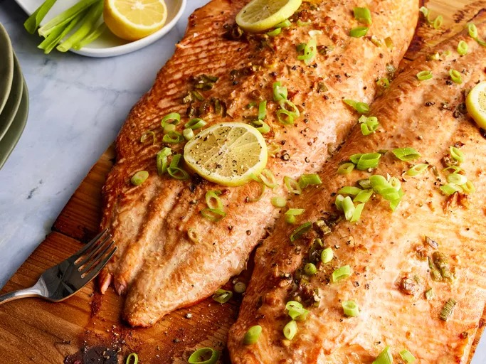

Grilled Cedar Planked Salmon

Description
This cedar planked salmon is a showstopper that's surprisingly easy to make. The cedar plank adds a subtle woody flavor while keeping the fish moist and tender. Perfect for both casual family dinners and entertaining guests.
Ingredients
- Salmon: 2-pound wild-caught salmon fillet, skin on
- Cedar plank: Untreated cedar plank, soaked for at least 2 hours
- Olive oil: For brushing the salmon
- Garlic: Fresh minced garlic
- Seasonings: Sea salt, black pepper, and fresh dill
- Lemon: Fresh lemon slices for garnish and flavor
- Honey: For a subtle sweetness and beautiful glaze
- Dijon mustard: Adds tanginess and helps form a crust
Steps
- Soak cedar plank in water.
- Preheat grill to medium-high heat.
- Prepare honey-mustard glaze.
- Season salmon and place on plank.
- Grill until salmon is cooked through.
- Let rest briefly before serving.